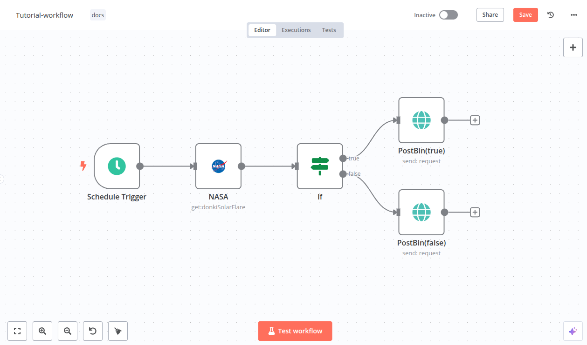
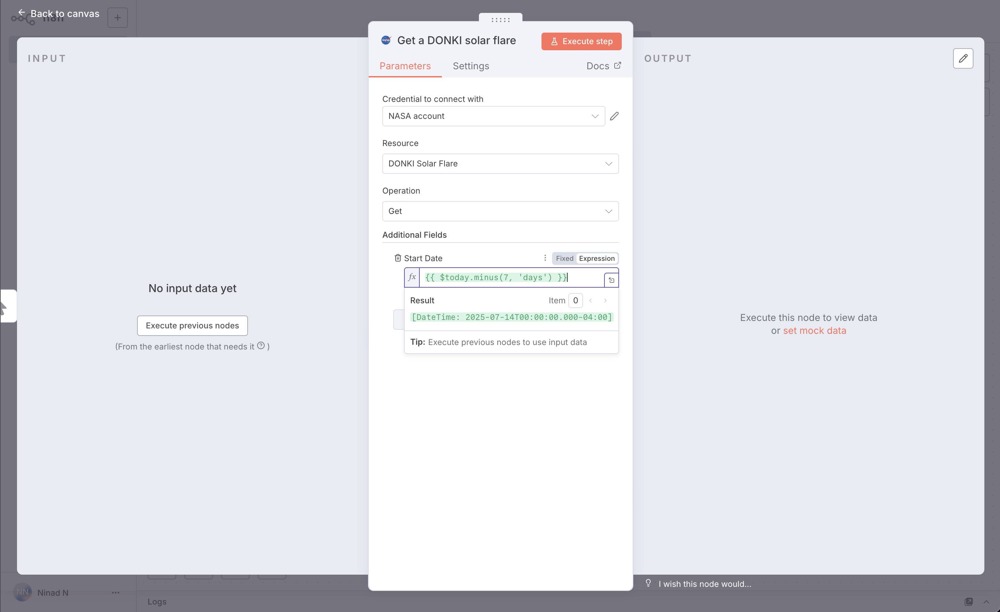
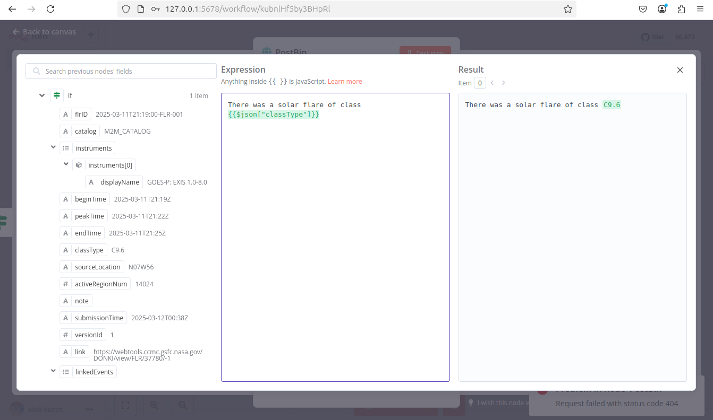

03 · 创建你的第一个工作流
Build Your First Workflow
官方出处：
docs/get-started/build-your-first-workflow.md（官方新手教程，本教程为其中英对照友好版）官方教程原文地址：https://docs.n8n.io/get-started/build-your-first-workflow
本节目标 / What You'll Learn
中文版目标：亲手从零搭一个能用的自动化工作流——「每周抓取 NASA 太阳耀斑数据，按级别分类后发送报告」。
在这个过程中你会学到（与官方教程一致）：
- 用触发器节点（Trigger Node）启动工作流
- 配置凭据（Credentials）
- 处理数据（Processing Data）
- 在工作流里表示逻辑（If 条件判断）
- 使用表达式（Expressions）
💡 小白提示：本教程用到的是「真实的外部服务」——NASA 的公开 API。每一步都会解释「为什么这么做」，跟着点就好，遇到任何报错先看第 06 章的排查表。
完成后工作流长这样 / The Finished Workflow
┌──────────────┐ ┌──────────┐ ┌────────┐ ┌───────────────────┐
│ Schedule │────▶│ NASA │────▶│ If │──真─▶│ PostBin (true) │
│ Trigger 定时 │ │ 抓太阳耀斑 │ │ 条件判断 │──假─▶│ PostBin (false) │
└──────────────┘ └──────────┘ └────────┘ └───────────────────┘
定时启动 请求数据 分类 X 级 发送两路报告

官方原文：This guide will show you how to construct a workflow in n8n, explaining key concepts along the way. 翻译：本指南将带你构建一个 n8n 工作流，并沿途讲解关键概念。
开始之前 / Before You Start
官方推荐新用户使用 n8n Cloud（第 02 章方式 A）。如果你用的是自部署版（方式 B/C），操作界面完全一样，直接跟着做即可。
你还需要准备两个外部账号（都是免费的）：
| 服务 | 用途 | 官网 |
|---|---|---|
| NASA API Key | 获取太阳耀斑数据 | https://api.nasa.gov/ |
| Postbin | 接收并展示发送的数据（临时网页） | https://www.toptal.com/developers/postbin/ |
🌏 本土化替代方案：如果 NASA 官网或 Postbin 在国内无法访问，第 7 节给出完全等价的替代练习方案，先读完 2~6 节再回来换。
Step 1 · 新建工作流 / Create a New Workflow
打开 n8n 后，你会看到两种情况之一：
- 情况 A：一个欢迎窗口，有两个大按钮 → 点击 Start from Scratch（从零开始）创建新工作流。
- 情况 B：Overview（概览）页面的 Workflows（工作流）列表 → 点击 Create Workflow（创建工作流）。
💡 小白提示：Create Workflow / Start from Scratch 都是「新建一个空白工作流」，选哪个都行。
Step 2 · 添加触发器节点 / Add a Trigger Node
n8n 提供两种启动工作流的方式：
| 方式 | 说明 |
|---|---|
| 手动执行 | 点击 Execute Workflow（执行工作流）按钮 |
| 触发器自动执行 | 第一个节点是触发器（Trigger），工作流会在收到外部事件或到达设定时间时自动运行 |
本教程使用 Schedule Trigger（定时触发器），让工作流按计划自动运行。
操作步骤：
- 点击 Add first step（添加第一步）。
- 在搜索框输入 Schedule，n8n 会显示匹配的节点列表。
- 选择 Schedule Trigger，节点会添加到画布上并自动打开设置面板。
- Trigger Interval（触发间隔）选择 Weeks（周）。
- Weeks Between Triggers（每几周触发一次）输入
1。 - 设置具体时间：Trigger on Weekdays（每周几）勾选 Monday（周一），Trigger at Hour（几点）选 9am（上午 9 点），Trigger at Minute（几分）填
0。 - 关闭节点设置面板，回到画布。
官方原文：The trigger node runs the workflow in response to an external event, or based on your settings. 翻译：触发器节点响应外部事件，或根据你的设置来运行工作流。
⏰ 本土化提示：自部署时如果设置过
Asia/Shanghai时区（第 02 章），这里的 9am 就是北京时间上午 9 点。若没设置时区，默认是服务器时间。
Step 3 · 添加 NASA 节点并配置凭据 / Add the NASA Node & Set Up Credentials
NASA 节点 的作用是调用 NASA 的公开 API（应用程序接口）获取真实数据。我们用它的实时数据来查找太阳活动。
首先，理解凭据（Credentials）：
官方原文：Credentials are private pieces of information issued by apps and services to authenticate you as a user and allow you to connect and share information between the app or service and the n8n node. 翻译：凭据是应用和服务颁发给你的私密信息，用于验证你的身份，并允许你在该服务与 n8n 节点之间连接和共享信息。
操作步骤：
点击 Schedule Trigger 节点上的 Add node（添加节点）连接点（画布上节点右侧的小圆点）。
搜索 NASA，在结果中选择 NASA 节点。
选择操作（Operation）：搜索并选择 Get a DONKI solar flare（获取 DONKI 太阳耀斑）。这个操作返回近期太阳耀斑的报告。选择后 n8n 会把节点加到画布并打开它。
配置凭据（要访问 NASA API，必须设置）：
- 点击 Credential for NASA API（NASA API 凭据）下拉框。
- 选择 Create new credential（创建新凭据），n8n 会打开凭据编辑视图。
- 打开 https://api.nasa.gov/，点击 Generate API Key（生成 API 密钥）链接并填写表单。NASA 会生成密钥并发送到你填写的邮箱。
- 去邮箱查收 API 密钥（没看到就检查垃圾邮件/订阅邮件文件夹），复制后粘贴到 n8n 的 API Key 输入框。
- 点击 Save（保存）。
- 关闭凭据界面，返回节点设置。新的凭据应该已自动选中。
设置时间范围：DONKI Solar Flare 默认返回过去 30 天的数据。要只取最近一周：
- 展开 Additional Fields（附加字段），点击 Add field（添加字段）。
- 选择 Start date（开始日期）。
- 在 Start date 旁切换到 Expression（表达式）选项卡，点击展开按钮打开完整的表达式编辑器。
- 在表达式框输入：
{{ $today.minus(7, 'days') }}官方原文：This generates a date in the correct format, seven days before the current date. 翻译：这会生成一个格式正确的日期——当前日期往前 7 天。
💡 小白提示：
$today是 n8n 内置变量，代表今天；.minus(7, 'days')是「减 7 天」。现在不用懂语法，第 04 章会详细讲表达式。
关闭表达式编辑器，返回 NASA 节点。
测试节点：点击 Execute step（执行本步骤）手动运行该节点。n8n 会调用 NASA API，并在 OUTPUT（输出）面板显示过去 7 天的太阳耀斑信息。
关闭 NASA 节点，回到画布。
✅ 为什么这一步很重要：这一步你学会了「配置凭据」和「测试单节点」——这是后续所有节点操作的通用技能。
Step 4 · 用 If 节点添加逻辑 / Add Logic with the If Node
n8n 支持在工作流中表达复杂逻辑。这里用 If（如果）节点 创建两个分支，分别生成不同级别的报告。
太阳耀斑有 5 种分级（A、B、C、M、X，X 最强）。我们加一段逻辑：X 级的走一个分支，其他级别的走另一个分支。
操作步骤：
- 点击 NASA 节点上的 Add node 连接点。
- 搜索 If，选择 If 节点，节点会添加到画布并打开。
- 设置判断条件——检查 NASA 数据里的
classType（级别）字段：- 把
classType拖拽到 Value 1（值 1）。这一步就是「数据映射（Data Mapping）」，拖过去后会自动生成表达式。⚠️ 官方提示：如果上一步没执行 NASA 节点，这一步会看不到任何数据可拖。先回去执行 NASA 节点！
- 把比较操作改为 String > Contains（字符串 > 包含）。
- 在 Value 2 输入 X（太阳耀斑的最高级别）。下一步会创建两个报告：X 级的一份，其他级别的一份。
- 把
- 测试节点：点击 Execute step。n8n 会把数据按条件测试，并在 OUTPUT 面板显示哪些数据匹配（true 真）哪些不匹配（false 假）。
💡 官方提示：如果运行的时候正好没有 X 级耀斑，把 Value 2 里的 X 换成 A、B、C 或 M 即可。
- 确认节点能返回结果后，关闭节点回到画布。
（If 节点逻辑示意）
classType 包含 "X" ?
│
┌────┴────┐
真 假
(true) (false)
│ │
PostBin PostBin
(X级报告) (其他级别报告)
Step 5 · 输出工作流数据 / Output Data from Your Workflow
工作流的最后一步是把两份报告发送出去。这里使用 Postbin——一个接收数据并在临时网页上展示的服务。
操作步骤：
在 If 节点上，点击标着 true（真）的 Add node 连接点。
搜索 PostBin，选择它。
选择 Send a request（发送请求），节点添加到画布并打开。
打开 https://www.toptal.com/developers/postbin/，点击 Create Bin（创建收件箱）。保持这个标签页开着，后面测试要回来刷新看结果。
复制 bin ID（收件箱 ID），长这样：
1651063625300-2016451240051。回到 n8n，把 ID 粘贴到 Bin ID 输入框。
配置要发送的内容：鼠标悬停在 Bin Content（内容）上，切换到 Expression（表达式）选项卡，点击展开按钮打开完整表达式编辑器。
拖拽数据字段：从 If 节点的输出面板里，把
classType字段拖进表达式编辑器，它会自动生成引用{{$json["classType"]}}。在引用前后加上文字，让完整表达式变成：
There was a solar flare of class {{$json["classType"]}}官方原文：There was a solar flare of class …（翻译：出现了一次 XX 级的太阳耀斑） 💡 小白提示：
{{$json["classType"]}}的意思是「把当前数据的 classType 字段的值填在这里」。运行时会自动替换成真实的级别，比如 "There was a solar flare of class X1.2"。
关闭表达式编辑器，返回节点。
关闭 Postbin 节点，回到画布。
再添加一个 Postbin 节点，处理 If 节点的 false（假）输出路径：
- 鼠标悬停在第一个 Postbin 节点上，点击菜单（节点右上角的 ⋯ 图标，官方叫 Node context menu）→ 选择 Duplicate node（复制节点）。
- 把 If 节点的 false 连接点拖到新 Postbin 节点的左侧。
Step 6 · 测试整个工作流 / Test the Workflow
- 点击 Execute Workflow（执行工作流）。n8n 会依次运行所有节点，你可以在画布上看到每个阶段的执行状态。
- 回到 Postbin 页面，刷新，就能看到发送过来的报告内容了！
- 如果你希望这个工作流每周自动运行（而不是每次手动点），点击 Publish（发布）。
⚠️ 官方提示（时间限制）：Postbin 的收件箱创建后只存在 30 分钟。如果超时了，需要重新 Create Bin 并把新 ID 填到 Postbin 节点里。
🎉 恭喜！/ Congratulations
你现在拥有一个能真正干活的自动化工作流了！它看起来应该像本教程开头的示意图。
官方原文：You now have a fully functioning workflow that does something useful! 翻译：你现在拥有一个完整可用、真正有用的工作流了！
这一路你学会了：
- 找到想要的节点并把它们连接起来
- 用表达式处理数据
- 创建凭据并挂到节点上
- 在工作流中使用逻辑
想直接导入官方成品？ 官方手册仓库里自带这个工作流的 JSON 文件（含全部节点配置），你可以直接导入到你的 n8n（画布右上角 ⋮ 菜单 → Import from File / Import from URL，选择/填写该 JSON）：
- 本地路径：
docs/_workflows/try-it-out/quickstart/tutorial.json - 在线地址：https://raw.githubusercontent.com/n8n-io/n8n-docs/refs/heads/main/docs/_workflows/try-it-out/quickstart/tutorial.json
⚠️ 导入后仍需自己配置 NASA 凭据和 Postbin ID（模板里的凭据是示例，导入后不会生效）。
7. 本土化替代练习（网络受限时）/ Alternative Practice Setup
如果 NASA 或 Postbin 在你网络环境下打不开，用下面的等价方案练习同样的技能（定时触发、获取数据、条件判断、发送结果），一套流程不白学：
| 原节点 | 替代方案 | 说明 |
|---|---|---|
| NASA 节点 | HTTP Request 节点 | 请求 https://httpbin.org/json 或 https://api.quotable.io/random 等国内可访问的免费 API，无需凭据 |
| Postbin 节点 | Webhook.site 或 RequestBin | 国内一般可访问 https://webhook.site；或直接改用 Gmail/Telegram 通知节点发送结果（更实用） |
练习思路：定时触发 → HTTP Request 抓取一条随机语录/JSON → If 判断某个字段（比如语录长度是否大于 50 字）→ 真分支发通知 A，假分支发通知 B。
💡 为什么这样做：技能是一样的——「取数、判断、输出」。以后接任何真实服务（企业微信、钉钉、数据库、AI 接口）都是这套流程。
8. 关于发布与版本（重要）/ Publish & Versions
官方教程最后让你点 Publish（发布）——n8n 的保存/发布机制值得花 30 秒理解：
- 自动保存：编辑时 n8n 自动保存（通常 1~5 秒内），没有手动保存按钮。
- 草稿与发布：所有改动先留在「草稿」里；只有点 Publish 后，定时器才会按计划跑、Webhook 才会用生产地址。
- 版本历史：每次发布都会留下一个版本，随时可以回滚（第 06 章详细讲）。
官方原文：n8n auto saves your workflow while you're editing. When you're ready to put the workflow into production, publish your workflow. 翻译：编辑时 n8n 自动保存。当你准备好把工作流投入生产时，发布它。
💡 小白提示：学习阶段不发布也能手动测试（Execute Workflow 按钮）。发布主要是为了「定时自动跑」和「Webhook 生效」。
下一章 → 04 · 数据与表达式